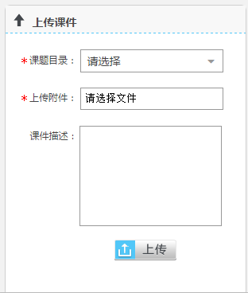
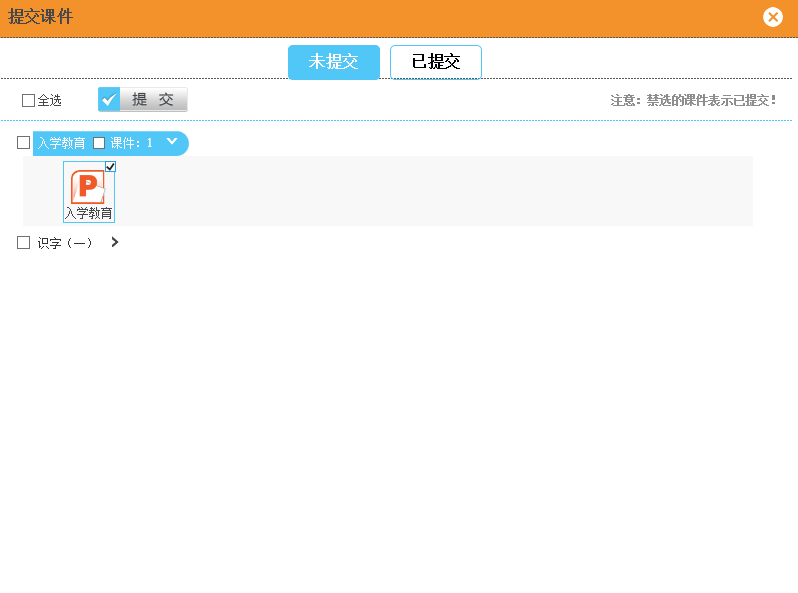
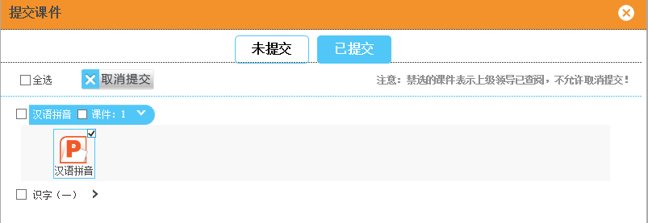
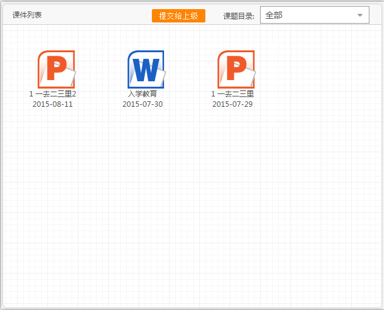

3.2.3 上传课件
1、上传课件
用户可以上传已经撰写的课件。选择课件目录、 填写课件描述、上传附件并点击保存完成课件上传。（如图3.2.3-1）
2、提交课件
用户可将课件提交给上级查阅。选择要提交的课件，点击“提交”，可以完成课件提交给上级的操作。（如图3.2.3-2）
取消提交：点击“取消提交”可以完成取消提交给上级课件的操作。（若课件已被领导查阅，则不允许被取消提交）（如图3.2.3-3）
3、课件整理
用户可以对课件信息进行修改，删除，分享，取消分享，下载，查看查阅，查看评论操作。（如图3.2.3-4、图3.2.3-5）
4、用户打开课件，以不可以编辑ppt的形式展现